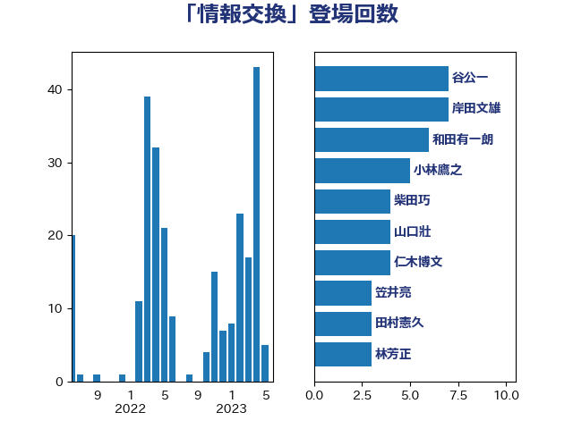

単語「情報交換」

| 谷公一 | 自由民主党 | 7 回 |
| 岸田文雄 | 自由民主党 | 7 回 |
| 和田有一朗 | 日本維新の会 | 6 回 |
| 小林鷹之 | 自由民主党 | 5 回 |
| 柴田巧 | 日本維新の会 | 4 回 |
| 山口壯 | 自由民主党 | 4 回 |
| 仁木博文 | 無所属 | 4 回 |
| 笠井亮 | 日本共産党 | 3 回 |
| 田村憲久 | 自由民主党 | 3 回 |
| 林芳正 | 自由民主党 | 3 回 |
| 松野博一 | 自由民主党 | 3 回 |
| 小倉將信 | 自由民主党 | 3 回 |
| 加藤勝信 | 自由民主党 | 3 回 |
| 鬼木誠 | 立憲民主党 | 2 回 |
| 高良鉄美 | 無所属 | 2 回 |
| 高橋千鶴子 | 日本共産党 | 2 回 |
| 阿部司 | 日本維新の会 | 2 回 |
| 鈴木庸介 | 立憲民主党 | 2 回 |
| 野田佳彦 | 立憲民主党 | 2 回 |
| 輿水恵一 | 公明党 | 2 回 |
| 石田昌宏 | 自由民主党 | 2 回 |
| 田村智子 | 日本共産党 | 2 回 |
| 浅田均 | 日本維新の会 | 2 回 |
| 杉本和巳 | 日本維新の会 | 2 回 |
| 岩渕友 | 日本共産党 | 2 回 |
| 太栄志 | 立憲民主党 | 2 回 |
| 大家敏志 | 自由民主党 | 2 回 |
| 堀場幸子 | 日本維新の会 | 2 回 |
| 中谷一馬 | 立憲民主党 | 2 回 |
| 上田勇 | 公明党 | 2 回 |
| 高橋英明 | 日本維新の会 | 1 回 |
| 須藤元気 | 無所属 | 1 回 |
| 青木愛 | 立憲民主党 | 1 回 |
| 門山宏哲 | 自由民主党 | 1 回 |
| 鈴木俊一 | 自由民主党 | 1 回 |
| 野田聖子 | 自由民主党 | 1 回 |
| 赤嶺政賢 | 日本共産党 | 1 回 |
| 西銘恒三郎 | 自由民主党 | 1 回 |
| 西村康稔 | 自由民主党 | 1 回 |
| 葉梨康弘 | 自由民主党 | 1 回 |
| 荒井優 | 立憲民主党 | 1 回 |
| 自見はなこ | 自由民主党 | 1 回 |
| 細田健一 | 自由民主党 | 1 回 |
| 竹谷とし子 | 公明党 | 1 回 |
| 空本誠喜 | 日本維新の会 | 1 回 |
| 礒崎哲史 | 国民民主党 | 1 回 |
| 石垣のりこ | 立憲民主党 | 1 回 |
| 田村まみ | 国民民主党 | 1 回 |
| 田嶋要 | 立憲民主党 | 1 回 |
| 源馬謙太郎 | 立憲民主党 | 1 回 |
| 浜田靖一 | 自由民主党 | 1 回 |
| 河野太郎 | 自由民主党 | 1 回 |
| 武田良太 | 自由民主党 | 1 回 |
| 横山信一 | 公明党 | 1 回 |
| 榛葉賀津也 | 国民民主党 | 1 回 |
| 森山浩行 | 立憲民主党 | 1 回 |
| 松本尚 | 自由民主党 | 1 回 |
| 本村伸子 | 日本共産党 | 1 回 |
| 末松信介 | 自由民主党 | 1 回 |
| 早坂敦 | 日本維新の会 | 1 回 |
| 斎藤洋明 | 自由民主党 | 1 回 |
| 斉藤鉄夫 | 公明党 | 1 回 |
| 岡本三成 | 公明党 | 1 回 |
| 山本剛正 | 日本維新の会 | 1 回 |
| 小野田紀美 | 自由民主党 | 1 回 |
| 小林史明 | 自由民主党 | 1 回 |
| 寺田静 | 無所属 | 1 回 |
| 宮本岳志 | 日本共産党 | 1 回 |
| 塩川鉄也 | 日本共産党 | 1 回 |
| 堀内詔子 | 自由民主党 | 1 回 |
| 嘉田由紀子 | 無所属 | 1 回 |
| 古賀友一郎 | 自由民主党 | 1 回 |
| 古川禎久 | 自由民主党 | 1 回 |
| 勝部賢志 | 立憲民主党 | 1 回 |
| 佐藤啓 | 自由民主党 | 1 回 |
| 伊藤孝江 | 公明党 | 1 回 |
| 丸川珠代 | 自由民主党 | 1 回 |
| 中村裕之 | 自由民主党 | 1 回 |
| 中川宏昌 | 公明党 | 1 回 |
| 一谷勇一郎 | 日本維新の会 | 1 回 |
| ながえ孝子 | 無所属 | 1 回 |
| たがや亮 | れいわ新選組 | 1 回 |
| こやり隆史 | 自由民主党 | 1 回 |